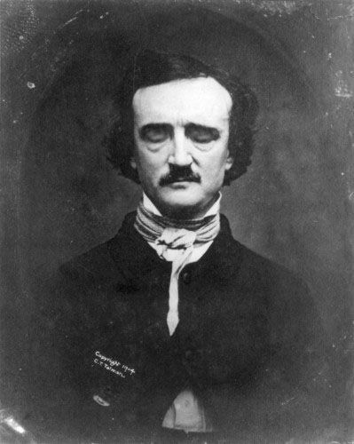

I really enjoy playing video games, ever since I was like 4-5 years old, I've been playing games on multiple platforms. I am currently playing this fun and interesting, but terribly complex for beginners, Warframe.
Fun Fact: My favorite video game is Bloodborne by the "FromSoftware" team of developers. This is because I absolutely love the dark ambience and it reminds me of my favorite short story author: Edgar Allan Poe!
I don't think I read a lot, but I've tried many times to implement this habit into my daily routine; not even daily, just a regular and incredible habit.
I think reading is one of the most enjoyable activities, because it can capture your whole attention with just and immerse you into any kind of world. A science fiction dystopian world where books are burned (Fahrenheit 451 is awesome; one of my favorite books), or one where all sorts of mysteries occur that haunt people relentlessly. They don't even have to transport you to another world. Books from Dale Carnegie, for example, make you feel so empowered and genuenly help you understand people and how to talk with them, how to negotiate and get on their good side, etc.
So yeah, books are awesome... even if reading them is difficult at times, they just click sometimes.
I don't really play any music, although I would like to learn how to play music so I could interpret my favorite songs. I do listen to plenty of music though. I really like bands like Radiohead or Interpol, kind of popular but their sound is different from popular or mainstream music.
Radiohead is definitely my favorite band of them all however. I can't describe what I like of them because they've experimented so much throughout the years, it's hard to define their sound; I can say though, they are truly amazing.